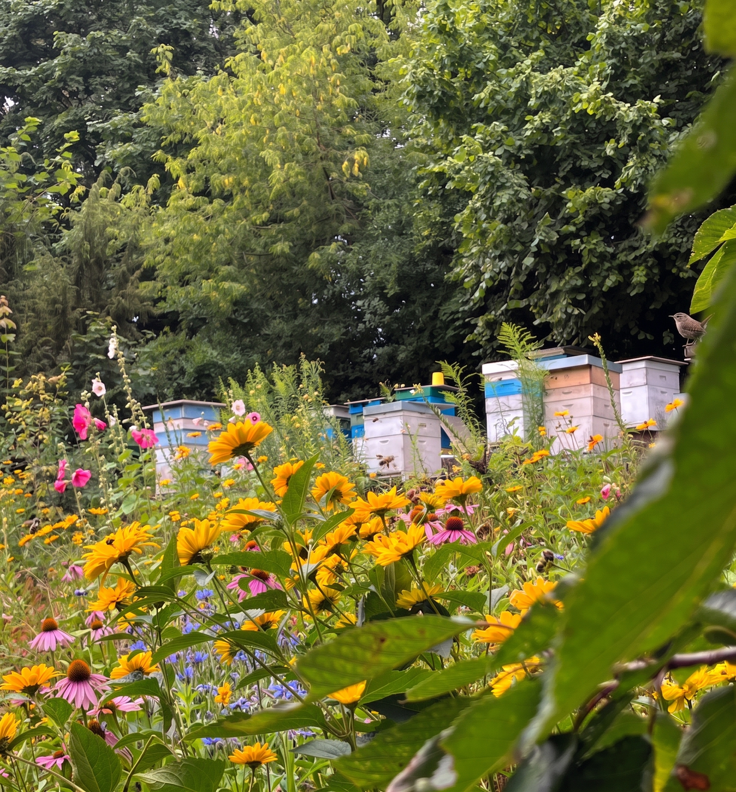

Naturbelassener Rohhonig aus dem Naturschutzgebiet Kępa Redłowska
Gewonnen in unserer Familienimkerei an den Küstenklippen von Gdynia – wo die frische Ostseebrise auf geschützte Lindenkronen, Robinien und blühende Wildwiesen trifft. Vier Generationen imkerliches Wissen seit 1923.

Vier Generationen Handwerk
Von Ururgroßmutter Jadwiga bis zu Jarek – über ein Jahrhundert Familienwissen über das Leben im Bienenstock, den Rhythmus der Trachten und wesensgemäße Imkerei.
Küsten-Mikroklima
Linden, Robinien, Nachtkerzen und wilde Kornblumen des Schutzgebiets Kępa Redłowska verleihen den Honigen ein unverwechselbares Blütenbouquet und eine feine mineralische Frische.
Reine, unverfälschte Ernte
Direkt aus den Waben – ungeheizt, unpasteurisiert und schonend kaltgerührt, um alle lebendigen Enzyme, wertvollen Pollen und zarten Aromen zu bewahren.
Saisonale Ernten
Sieben naturbelassene Sorten- und Blütenhonige. Jedes Glas spiegelt das authentische Wetter, den Boden und die Blütenpracht des Naturschutzgebiets wider.

Eine Tradition, die keine Eile braucht
Alles begann mit Ururgroßmutter Jadwiga, die die ersten Bienenstöcke der Familie aufstellte. Heute betreut Jarek die Bienenvölker am ruhigen Rand des Naturschutzgebiets Kępa Redłowska – dort, wo der Stadtlärm der Meeresbrise und geschützten Wildwiesen weicht.